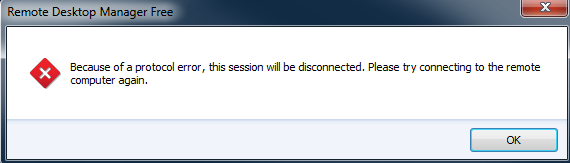
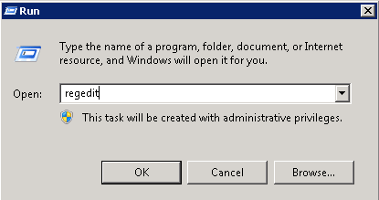
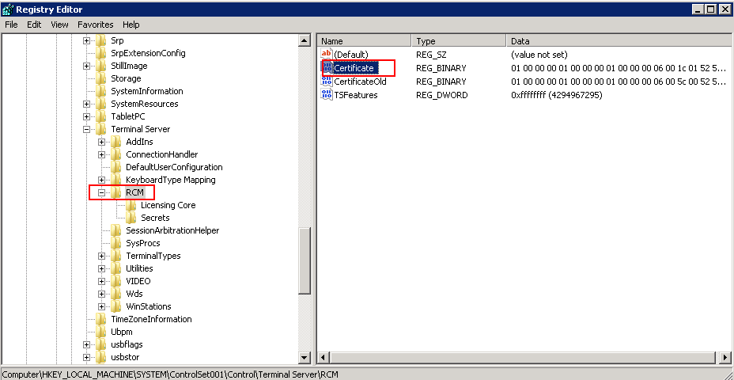
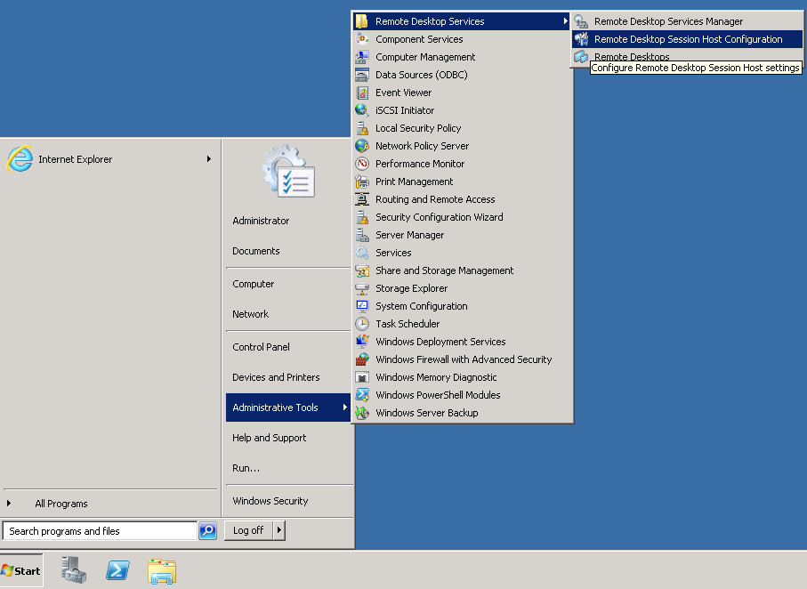
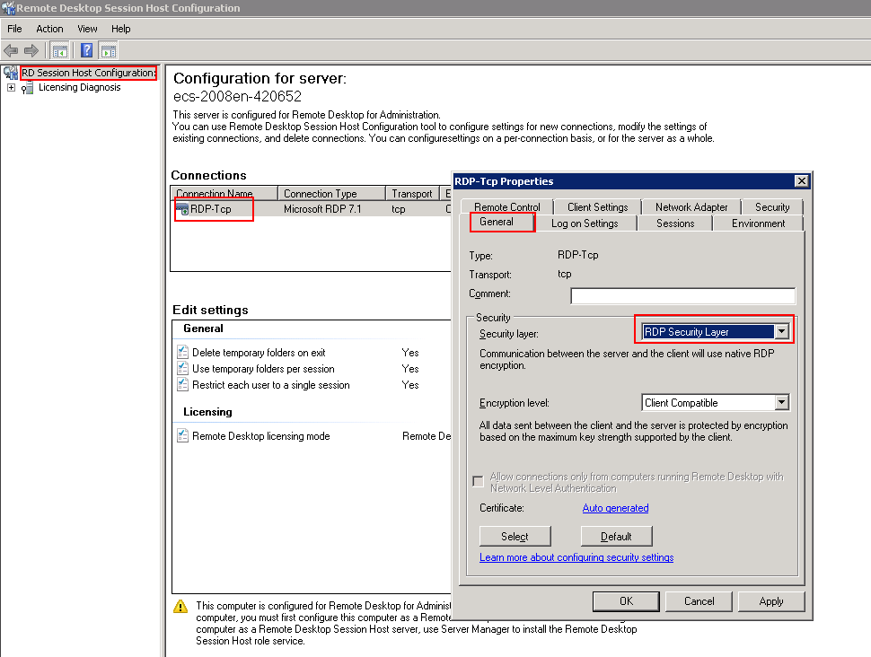

Symptom
An error message is displayed indicating that the remote session will be disconnected because of a protocol error.
Figure 1 Protocol error

Possible Causes
The registry subkey Certificate is damaged.
Solution
- In the Run dialog box, enter regedit and click OK to open the registry editor.
Figure 2 Opening the registry editor

- Choose HKEY_LOCAL_MACHINE > SYSTEM > ControlSet001 > Control > Terminal Server > RCM.
- Delete Certificate.
Figure 3 Deleting Certificate

- Restart the ECS.
- Choose Start > Administrative Tools > Remote Desktop Services > Remote Desktop Session Host Configuration.
Figure 4 Opening Remote Desktop Session Host Configuration

- Right-click RDP-Tcp and choose Properties. In the displayed dialog box, click General and set Security layer to RDP Security Layer.
Figure 5 RDP-Tcp properties
